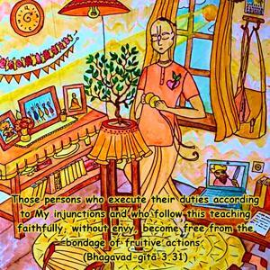
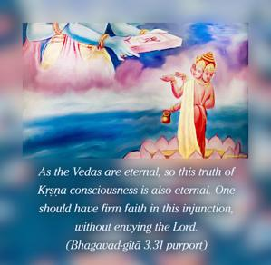
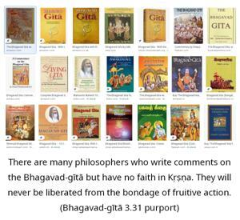

Those persons who execute their duties according to My injunctions and who follow this teaching faithfully, without envy, become free from the bondage of fruitive actions.



The injunction of the Supreme Personality of Godhead, Kṛṣṇa, is the essence of all Vedic wisdom and therefore is eternally true without exception. As the Vedas are eternal, so this truth of Kṛṣṇa consciousness is also eternal. One should have firm faith in this injunction, without envying the Lord. There are many philosophers who write comments on the Bhagavad-gītā but have no faith in Kṛṣṇa. They will never be liberated from the bondage of fruitive action. But an ordinary man with firm faith in the eternal injunctions of the Lord, even though unable to execute such orders, becomes liberated from the bondage of the law of karma. In the beginning of Kṛṣṇa consciousness, one may not fully discharge the injunctions of the Lord, but because one is not resentful of this principle and works sincerely without consideration of defeat and hopelessness, he will surely be promoted to the stage of pure Kṛṣṇa consciousness.